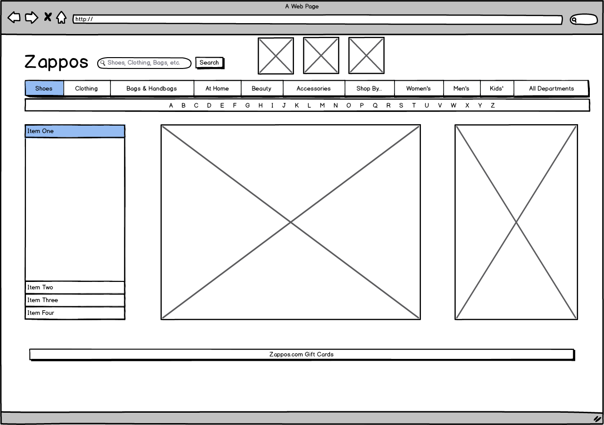
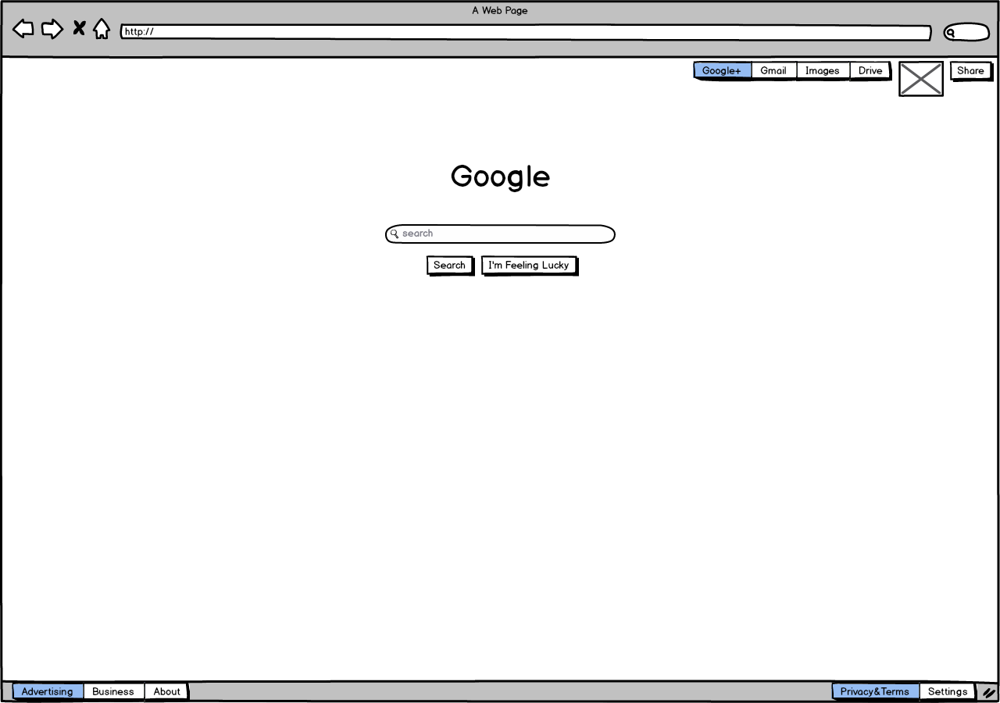
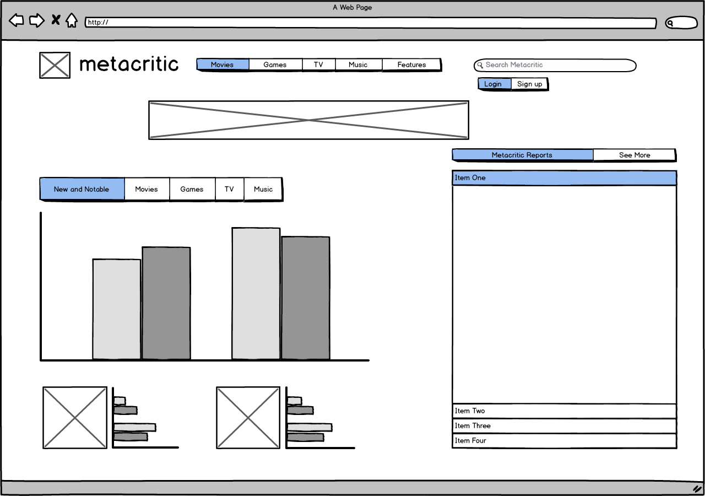

Wireframe #1: Zappos.com

This webpage is solving the problem of complicated online clothing (particularly shoe) shopping. The visual challenges include offering enough options for various products, while still maintaining a simple, easy-to-use look. After really analyzing the site, it looks like it may be a bit more cluttered than it really needs to be. There are many links and buttons on the home page that your average user probably doesn't use all that often.
Wireframe #2: Google.com

This webpage is solving the problem of not knowing what source to go to when you have a question or problem. Visual challenges include making sure the search bar is the main focus of attention, while also offering some of Google's other products on the page (i.e. Google+, Gmail, Google Drive).
Wireframe #3: Metacritic.com

This webpage is solving the problem of people having to go to multiple sites for reviews of different media. With metacritic, you can go to one site for movie, game, TV, and music reviews. Visual challenges include having an easy to digest home page that needs to focus on four different types of media. There is a lot of information to display (titles, ratings, type of media, written reviews), but it needs to look clean.